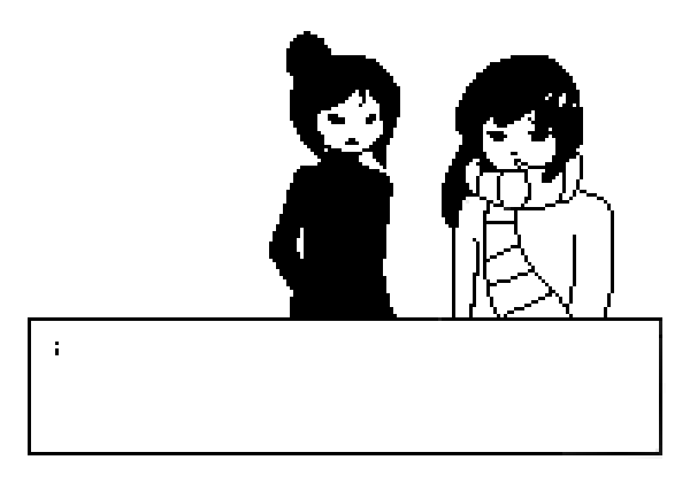

SWEET is a visual novel where you play as a young girl who pieces her friends' memories together.
SWEET.exe was first drafted as a webcomic with interactive storytelling. After meeting and working with some folks at the MIT Game Global Game Jam, I decided that it would be much more fulfilling to make it a video game instead. I was heavily inspired by the indie video game community, particularly in games made by one-person staff, such as Undertale and Pinstripe.
As most illustrators do, I have a set of beloved original characters that I have been drawing for years. Therefore, it was only natural for them to be part of the main cast of the game. Honey and Molasses are the two main point-of-view characters which the players control throughout the game.
Honey's design has stayed the same since her inception, but Molasses has been reworked and looks completely different from her first design.
I went for a 2-bit feel for the majority of the game. It was the best way to maintain a consistent graphic style, as my illustration styles constantly shift depending on my mood and skill level.
Special thanks to Piskel for creating such an easy spriteing tool available for use!
As this was my first game, I went with a Visual Novel style of UI. I plan to game to take from 2-4 hours to play, so the goal was to keep the UI simple and minimal, using point-and-click mechanics.
The decision to go with multiple endings and reverse storytelling came from a brainstorming session during the game jam. Our team developed a plethora of concepts but, we eventually settled on a tabletop design for one of our concepts. I fixated on one of our ideas, where a child wakes up from a car accident and tries to piece together the clues that lead to the accident, and decided to roll with that for my own personal project.
I decided to go with four basic endings (TRUE, NEUTRAL, NOTHING, BAD) with slight variations based on smaller choices the player makes in the game. I am not a fan of using attachment variables (e.g. X character likes me at 90% which means that will trigger Y event) as I believe that is not how things happen in real life, so instead, a basic decision tree was designed for the game.
The ultimate goal is to turn this game into a reality using a javascript based game engine such as Phaser. Another alternative is using Ren'py to transform the game into a visual novel, if I decide that making the game into a fully fleshed out RPG would be too much.
Update: I decided to useTyrano Builder for this project, as it allows the game to be ported to web and also allows for more customizability through the use of javascript. Basically, it contains all the customization I needed from Phaser combined with the simplicity of Ren'py.
I am very happy to say that I have a working demo of the game! I am currently collecting feedback and documenting the changes along the way. Below are some notable comments that users have pointed out during testing: